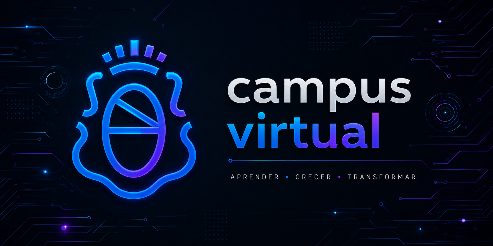

Formación
UPC · ISPC · UNC
 fedemontoro.com.ar
fedemontoro.com.ar
Junior Software Developer
Backend · Full-Stack · Procesos y análisis operativo
Perfil profesional
Mi nombre es Federico Montoro y actualmente me encuentro desarrollando mi formación en tecnología y desarrollo de software, combinando estudios académicos, proyectos prácticos y aprendizaje continuo.
Inicié mi recorrido en programación en 2025 cursando la Tecnicatura Universitaria en Programación Full Stack en la Universidad Provincial de Córdoba. Posteriormente amplié mi formación incorporando la Tecnicatura Superior en Desarrollo de Software del Instituto Superior Politécnico Córdoba, complementando este proceso con cursos, certificaciones y programas de formación continua dictados por distintas instituciones, entre ellas la Universidad Nacional de Córdoba.
Antes de ingresar al mundo del desarrollo construí una sólida trayectoria profesional vinculada a Customer Success, Customer Experience, procesos comerciales y análisis operativo. Durante esos años desarrollé habilidades de comunicación, gestión de clientes, resolución de problemas, orientación a resultados y mejora continua, participando activamente en la construcción de experiencias positivas para usuarios y clientes.
Esa experiencia me permite aportar una visión integral que combina tecnología, negocio y personas. No solo me interesa cómo funciona una solución digital, sino también qué problema resuelve, cómo impacta en quienes la utilizan y de qué manera puede generar valor real para una organización.
Me apasiona el desarrollo de soluciones centradas en el usuario, la optimización de procesos y la construcción de herramientas simples, útiles y escalables. Disfruto trabajar en equipo, aprender de manera constante y transformar ideas en proyectos concretos que mejoren la experiencia de las personas.
Actualmente continúo fortaleciendo mi perfil en áreas como desarrollo Full Stack, bases de datos, análisis funcional, Customer Success y entornos B2B SaaS, participando además en iniciativas propias como FreToKa Lab, donde exploro tecnologías, metodologías y soluciones aplicadas a necesidades reales.
UPC · ISPC · UNC
Customer Success · B2B SaaS · Operaciones · Procesos
TypeScript · Node.js · PostgreSQL · React
Trayectoria profesional
Customer Success · Procesos comerciales · Resolución de problemas
Cuento con una amplia experiencia en Customer Success, Customer Experience, procesos comerciales y análisis operativo. A lo largo de mi trayectoria desarrollé una fuerte capacidad para comprender necesidades, resolver problemas concretos y acompañar a las personas con una comunicación clara, cercana y orientada a resultados.
Mi perfil combina criterio comercial, vocación de servicio y mirada operativa. Esa base me permite entender no solo cómo construir una solución digital, sino también para qué se necesita, qué problema resuelve y cómo puede mejorar la experiencia de quien la utiliza.
Hoy aplico esa experiencia previa al desarrollo de software, integrando programación, análisis de procesos y enfoque centrado en el usuario para crear herramientas simples, útiles y sostenibles.
Formación académica
Carreras, certificaciones y actualización continua para una formación tecnológica integral.

Formación Universitaria
Tecnicatura Universitaria en Programación Full Stack
Formación universitaria orientada al desarrollo Full Stack, integrando frontend, backend, bases de datos y arquitectura de software. A través de proyectos académicos y trabajos colaborativos adquirí experiencia en el diseño y construcción de aplicaciones modernas, fortaleciendo mi capacidad para transformar necesidades reales en soluciones digitales funcionales.
Explorar proyectos UPC
Formación Técnica Superior
Tecnicatura Superior en Desarrollo de Software
Formación técnica centrada en programación, análisis de sistemas, documentación, testing y metodologías de desarrollo. Este recorrido fortaleció mis habilidades para comprender procesos, resolver problemas de manera estructurada y aplicar buenas prácticas en la construcción de software mantenible y escalable.
Explorar proyectos ISPC
Certificaciones y Formación Continua
Campus Virtual UNC
Certificaciones oficiales y formación continua desarrolladas a través de la Universidad Nacional de Córdoba, orientadas a innovación, transformación digital, metodologías de trabajo y actualización profesional permanente.
Explorar certificaciones UNCFRETOKA LAB
Laboratorio de soluciones digitales
Diseño web, digitalización de procesos, automatización de tareas y herramientas de gestión para profesionales, comercios y PyMEs.
Creamos soluciones simples, útiles y enfocadas en mejorar la productividad, la organización y la experiencia de usuario.
Landing pages, sitios institucionales y presencia digital profesional.
Transformación de planillas, formularios y procesos manuales en herramientas digitales.
Automatización de tareas repetitivas para ahorrar tiempo y reducir errores.
Herramientas internas para control, seguimiento y gestión operativa.
Contacto
¿Tenés una idea, proyecto o consulta?
Estoy disponible para conversar sobre desarrollo web, digitalización de procesos, automatización de tareas, herramientas de gestión y soluciones digitales para profesionales, comercios y PyMEs.